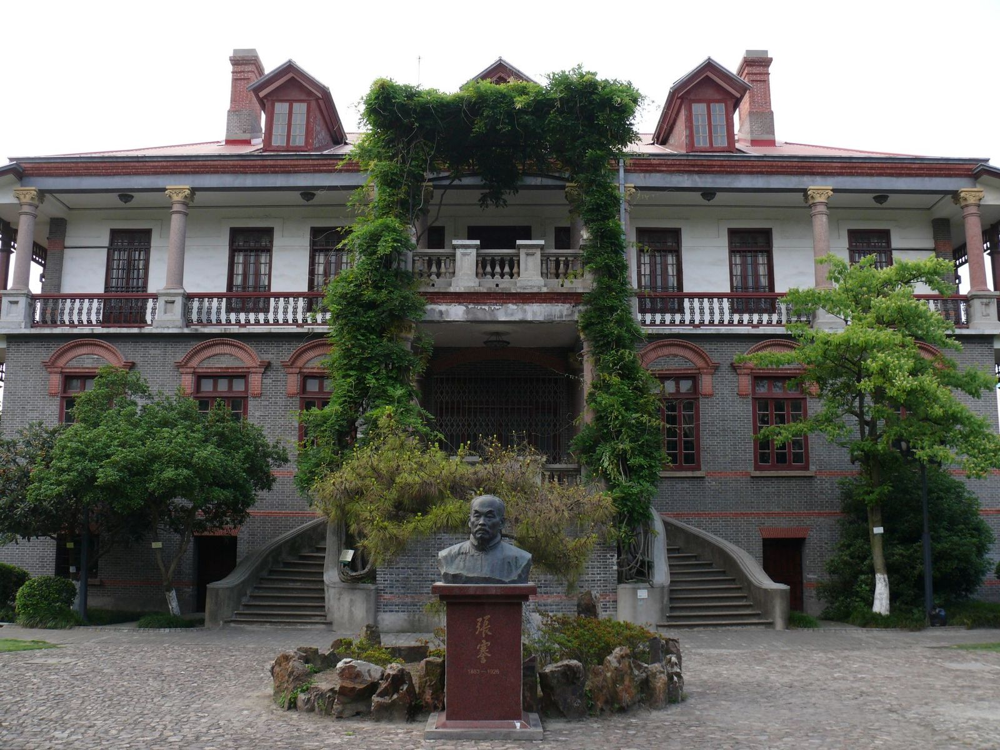
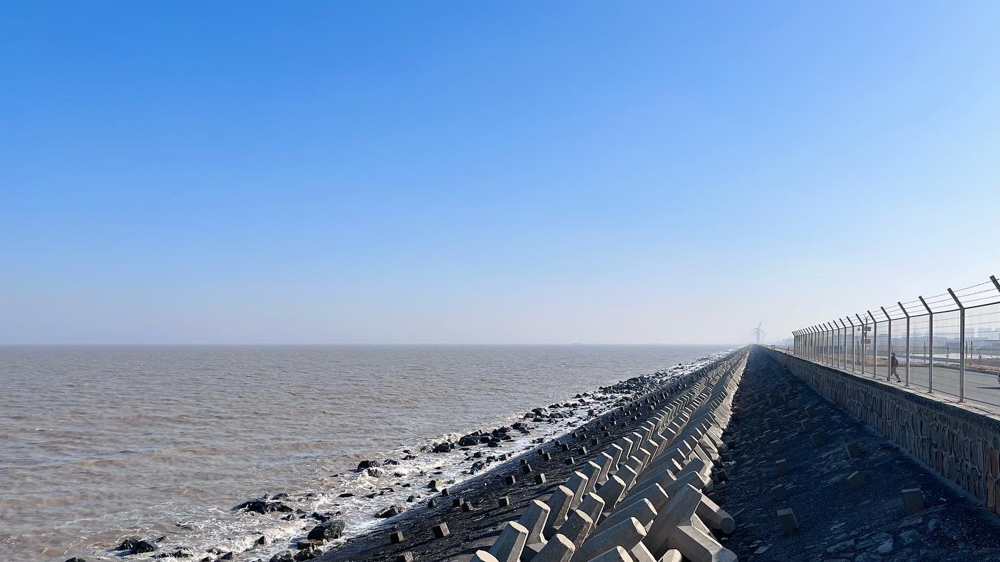

诗歌地点直接对应
狼山国家森林公园
对应《狼山三元宫近斥僧挽词》的地点记录。到现场寻找山、水与江面天光，回应“江月白翻翻”。
每一站有一条张謇线索，也有值得你亲自观察的今日风景。终点，把旅途带回一张书桌。
封面：今日张謇纪念馆实景点开一站，继续看它的张謇线索、今日景点与个人观察任务。可按兴趣选站，出行顺序由你决定。
从今日南通的山海与街巷漫游，也可以打开诗歌地图，追寻地点、主题和人物线索。
先选喜欢的山、城或海，再找到与它呼应的诗。每个主题都能成为你自己的南通行旅开篇。
左右滑动，查看三种漫游主题 →
先在诗中读到狼山，再到今天的山水中寻找“江月白翻翻”。想继续走，可自选博物苑、濠河或商圈，给旅程一个不同的尾声。
把河畔散步和城市生活排进自己的日程。
点选地图上的一境，看看历史线索如何连到今日风景。
故里原点张謇生于海门常乐镇。
从常乐的纪念空间认识张謇的故乡。
出生地与同镇纪念空间；不将今日景点误写为诗歌创作原址。
从诗句走向江海山水与城市人文。读诗、听朗读、看诗句关系，再用自己的观察续写旅程。
看山、访馆、追海天。每张卡都说明诗歌与今日景点的关系；现代风景不等于诗作年代的原貌。
对应《狼山三元宫近斥僧挽词》的地点记录。到现场寻找山、水与江面天光，回应“江月白翻翻”。
与《盆松》的地点记录同在常乐镇，但不表述为诗歌创作原址。可从松、木构与庭院细节理解“梁栋与谁论”。

作为南通城区的人文行旅补充，帮助读者在诗歌之外继续理解人物与城市。这里不是本页诗歌的创作原址。

从《落日九月十五歸自吕四途中》继续观察启东沿海的海面与天光。这里不是吕四渔港，也不推定为诗歌创作原址。
拍下一个与诗句产生呼应的空间细节，不追求复原历史。
先判断是诗歌地点、同镇关联、地区延伸，还是现代周边。
写一句现场观察，让旅行记录成为可回溯的当代注释。
每到一个地区，打开地点卡，自记一枚印章；读完诗，还能用照片和一句话留下观察。记录仅保存在这个浏览器。
正在读取本机记录…
保存一首诗的观察后，会在这里出现。
正在核对七境印章…
由你的选择生成本次行旅偏好；不是心理测评，也不是景区到访认证。读诗、辨地点、看今日、留记录。背后是数字人文的方法，体验却可以从一张照片和一句观察开始。
试试《八月十三夜曼寿堂看月》：拍树影、水波或月色，写一句感受；照片只保存在你的浏览器。